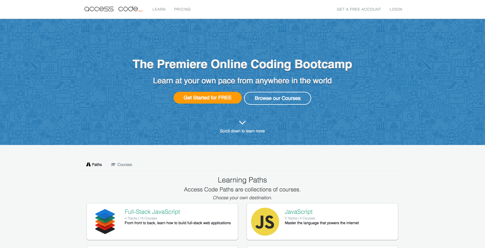
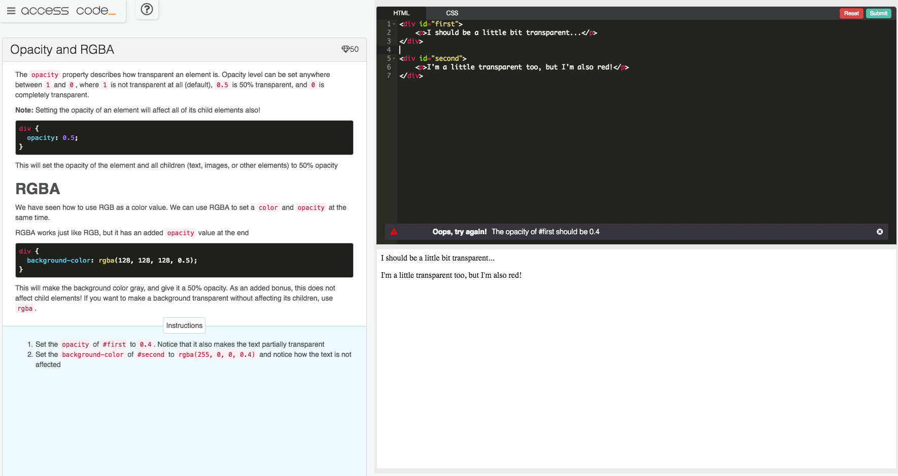
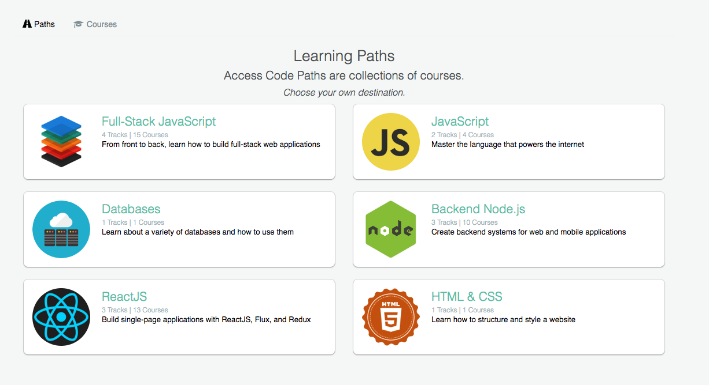
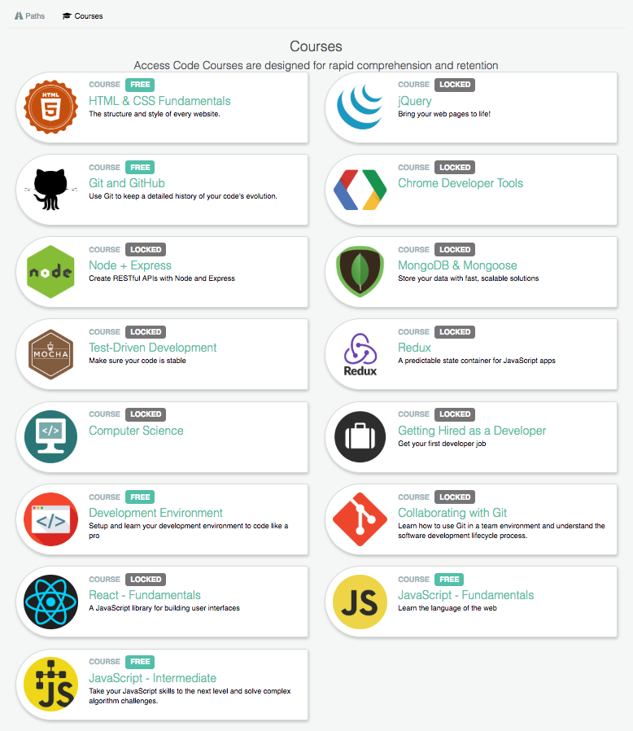
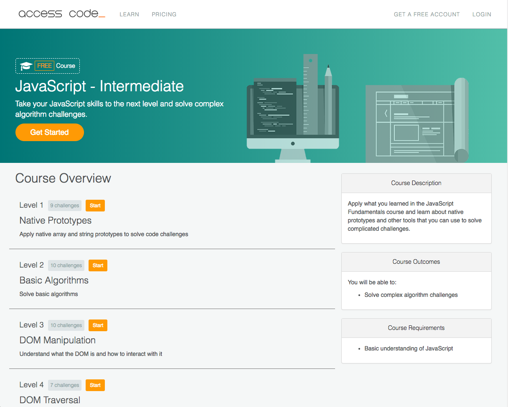
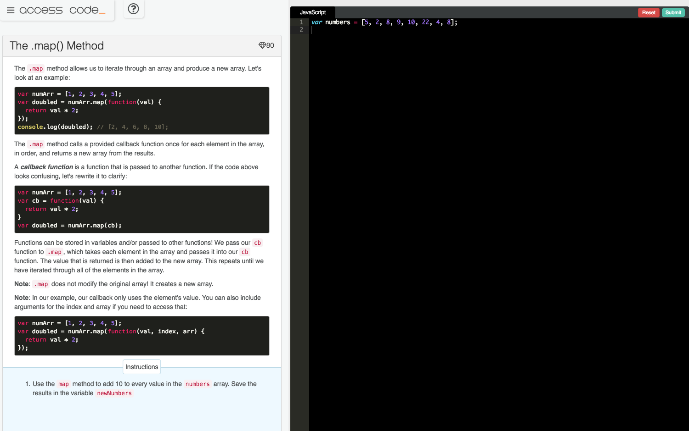
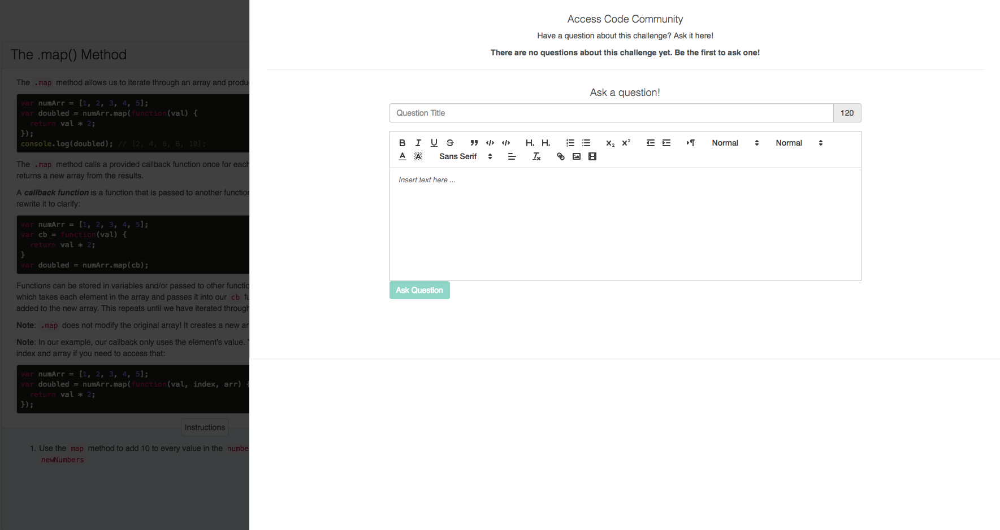
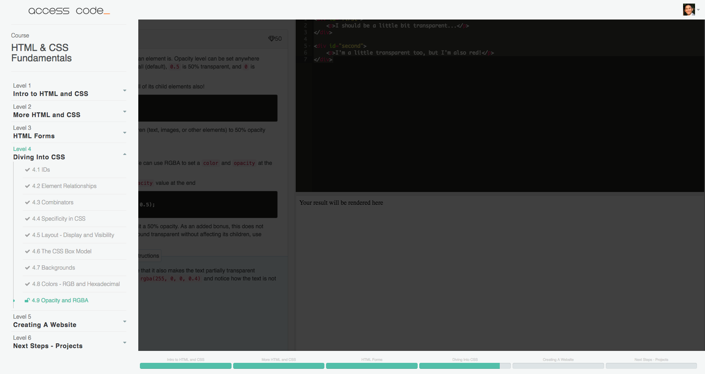
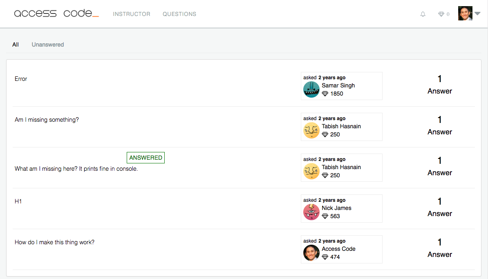
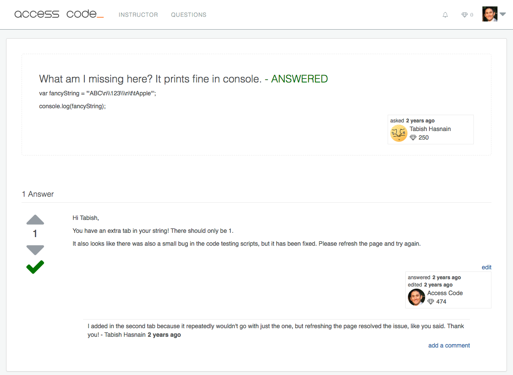
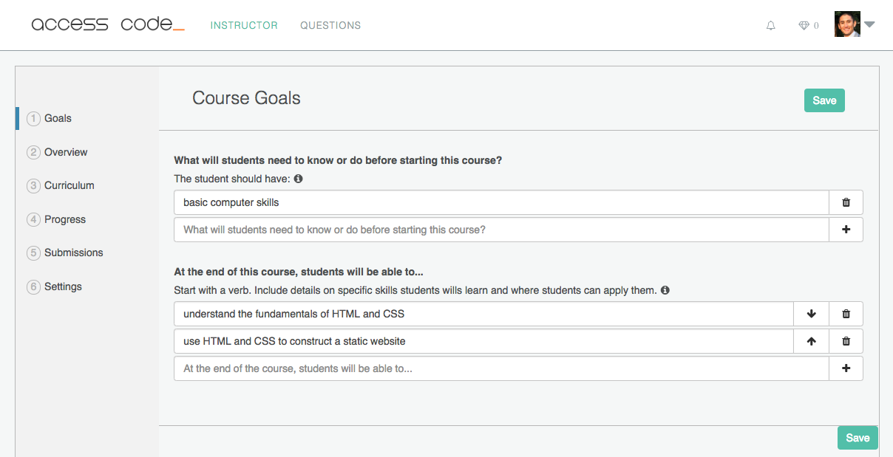
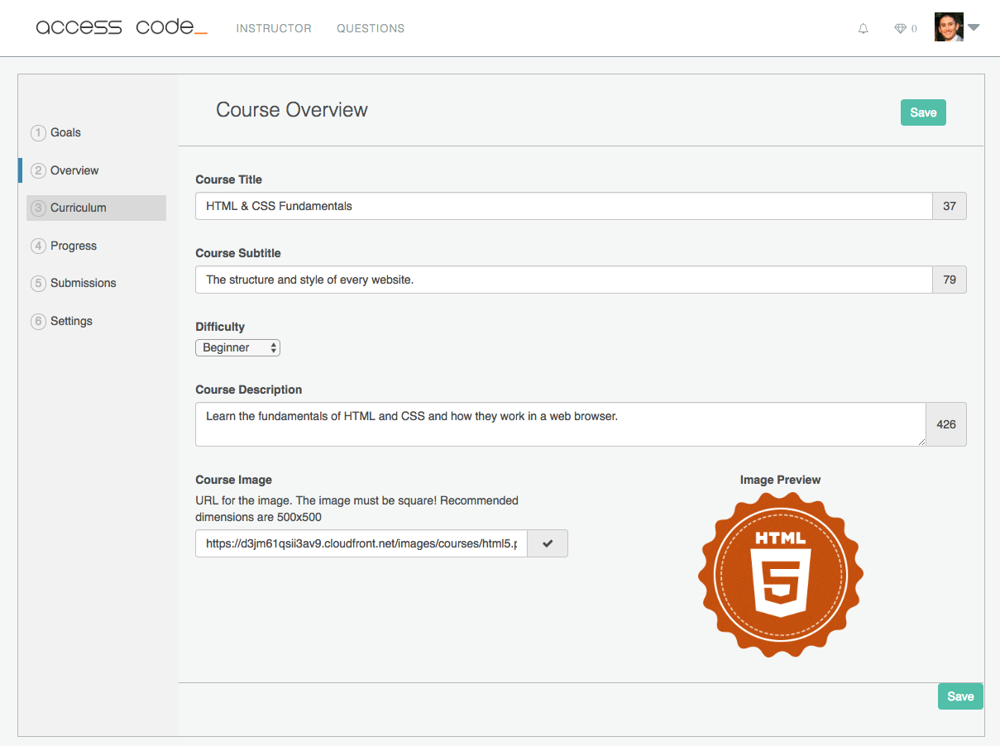
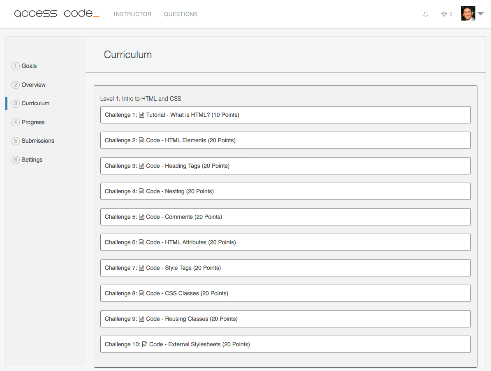
Description
Access Code was an online coding bootcamp.
Students were able to follow specific paths (for example, Full-Stack JavaScript) or complete individual courses.
I single-handedly built the platform and created all of the content.
Notable Features
The Access Code platform offered a fully automated code-checker which was built into the IDE. On the instructor's side, it offered a verbose course management dashboard where the course could be created, updated, and submissions could be
reviewed and graded.
- Courses
- multi-level progress tracking
- built-in IDE
- automatic code-checking
- suggestions and custom error messages
- Paths - curated collections of courses
- Point system
- Gamification system where students gain points by completing challenges, answering questions, etc
- Report cards
- Forum
- StackOverflow style forum where users are rewarded points for answering questions
- Avatar uploads (AWS)
- Admin/Instructor dashboard
- Verbose course builder
- Ability to add instructors with various permission levels
- Submission review and grading
- Ghost blog served on the same domain (not a subdomain - tricker than it sounds!)
- Credit card subscriptions (via Stripe) to access premium content
Technology
API Integrations